5.1. Загрузка с установочного диска
Простейший метод загрузить установочную систему — использовать установочный CD-ROM. Установочный диск Slackware Linux является загрузочным CD, что означает, что BIOS может начать загрузку с этого носителя точно так же, как и с дискеты. Большинство BIOS современных систем поддерживают загрузку с CD-ROM.
Если компьютер не загружается со вставленного компакт-диска, то, возможно, в BIOS указан некорректный порядок загрузочных устройств Войдите в настройки BIOS (обычно это можно сделать, нажав клавиши Del или Esc на экране с сообщениями BIOS во время старта компьютера) и убедитесь, что CD-ROM указан первым в списке устройств, с которых будет осуществляться загрузка системы. Если вы используете SCSI CD-ROM, возможно, вам придётся настроить загрузку в SCSI BIOS вместо системного. Сверьтесь с руководством SCSI-карты.
Когда CD-ROM будет загружен, появится экран приветствия. Обычно вы можете
просто нажать Enter, чтобы загрузить стандартное
(hugesmp.s) ядро Linux. Это ядро требует для загрузки процессор не
старше Pentium Pro. Вы можете загрузить другие ядра, указав имя ядра в
приглашении загрузчика и нажав Enter. Следующая таблица содержит
описание ядер, доступных для загрузки с CD и DVD Slackware Linux.
Таблица 5.1. Установочные ядра
| Linux | Описание |
|---|---|
| huge.s | Ранее каждому дисковому контроллёру соответствовал свой образ ядра. Новое большое ядро поддерживает наиболее распространённые контроллёры ATA, SATA и SCSI. Ядро не поддерживает SMP и работает на всех компьютерах младше i486. Если у вас Pentium Pro или компьютер с более новым процессором, то лучше использовать ядро hugesmp.s. |
| hugesmp.s | Это ядро поддерживает обычные контроллёры ATA, SATA и SCSI. Дополнительно в ядре включена поддержка SMP. Рекомендуется использовать этот образ ядра на компьютерах с процессором новее Pentium Pro. |
| speakup.s | Это ядро сравнимо с ядром huge.s, но оно также поддерживает аппаратный синтез речи. |
После загрузки системы установки, вам будет задан вопрос, желаете ли вы использовать специальную (национальную) клавиатуру. Если у вас обычная US/интернациональная клавиатура, как это бывает в большинстве случаев, вы можете просто нажать Enter. После этого появится приглашение для входа в систему. Авторизируйтесь под пользователем «root» Без пароля. После логина запустится оболочка командной строки, и вы можете начать установку Slackware Linux. Процедура установки будет описана в этой главе.
5.2. Разметка жёсткого диска
Установка Slackware Linux требует как минимум одного раздела Linux; также рекомендуется создать раздел swap. Для создания разделов необходимо, чтобы жёсткий диск содержал свободное неразмеченное пространство. Существует несколько программ, которые могут изменять размеры разделов. Например, FIPS может изменять размер разделов с файловой системой FAT. Также существуют коммерческие решения, например, Partition Magic, способные изменять разделы с разными файловыми системами.
После загрузки с компакт-диска Slackware Linux и регистрации в системе, в вашем распоряжении будут две программы: fdisk и cfdisk. cfdisk проще в использовании, т.к. имеет пользовательский интерфейс, основанный на меню, поэтому мы рассмотрим работу с этой программой.
Чтобы разметить первый жёсткий диск, вы можете просто выполнить
cfdisk. Если вы хотите разметить другой диск или SCSI-диск, вы
должны указать имя устройства в качестве параметра (cfdisk
/dev/device). Жёсткие диски ATA именуются следующим образом:
/dev/hdn, где n заменяется порядковым символом.
Например, основной мастер-диск называется /dev/hda, вторичный
slave-диск – /dev/hdd. SCSI-диски именуются сходным образом:
/dev/sdn, где n также заменяется порядковым символом
(первый диск = a, четвёртый – d).
Изображение 5.1. Программа для разметки жёстких дисков cfdisk
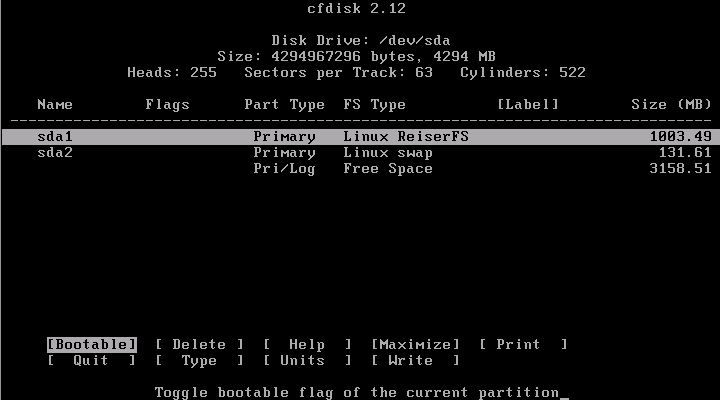
После запуска cfdisk будут показаны все существующие разделы и неразмеченная область. Можно перемещаться по списку разделов с помощью курсорных клавиш ↑ и ↓. Внизу экрана отображены некоторые команды, которые могут быть выбраны клавишами ← и →. По нажатию клавиши Enter команда будет выполнена.
Вы можете создать раздел Linux, выбрав «Free Space» и выполнив команду «New». cfdisk спросит у вас, хотите ли вы создать первичный или же дополнительный раздел. Число первичных разделов не может превышать четырёх. Linux может быть установлен на любой тип раздела. Если вы хотите установить другие операционные системы кроме Slackware Linux, которые могут быть установлены только на первичный раздел, тогда лучше установить Slackware Linux на расширенный раздел. Тип нового раздела автоматически устанавливается в «Linux Native», поэтому нет нужды его выбирать самостоятельно.
Создание swap-раздела включают те же шаги, что и создание обычного раздела Linux, но тип раздела должен быть «Linux Swap». Рекомендуемый размер раздела подкачки зависит от ваших требований. Swap-раздел используется для хранения программ в случае заполнения оперативной памяти. Если ваш жёсткий диск позволяет, будет хорошо создать swap размером 256 или 512 Мб, чего в общем случае должно быть достаточно. После создания раздела, тип может быть изменён на требуемый «Linux Swap» командой «Type». Программа cfdisk попросит вас указать номер типа. «Linux Swap» значится под номером 82. Обычно этот номер уже выбран, поэтому вы можете просто нажать Enter.
Если вы завершили разметку жёсткого диска, вы можете сохранить все изменения командой «Write». Эта операция требует подтверждения вводом «yes». После сохранения изменений вы можете выйти из cfdisk командой «Quit». Лучше перезагрузить компьютер перед началом установки, чтобы убедиться, что изменения дисковой разметки приняты. Нажмите Ctrl + Alt + Del, чтобы выключить Linux и перезапустить компьютер.
5.3. Установка Slackware Linux
Установщик Slackware Linux запускается командой setup в оболочке установочного диска. Программа выведет меню с несколькими строками. Вы можете увидеть снимок экрана на изображении 5.2. Для полной установки Slackware Linux понадобятся все пункты меню, но установщик сам проведёт вас по всем этапам.
Изображение 5.2. Программа установки
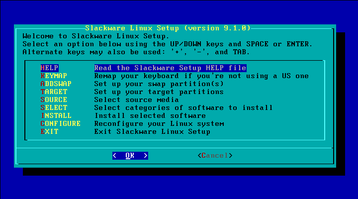
Первый этап установки носит название «ADDSWAP». Программа установки произведёт поиск разделов с типом «Linux Swap» и спросит вас, желаете ли вы отформатировать и подключить раздел (см. Изображение 5.3. Настройка раздела swap). Обычно вы можете просто нажать «Yes»
Изображение 5.3. Настройка раздела swap
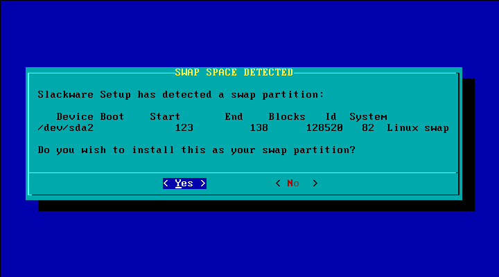
После настройки раздела подкачки, откроется пункт меню «TARGET», которое вы можете увидеть на Изображении 5.4. Оно используется для настройки разделов Slackware Linux. Установщик отобразит все разделы с типом «Linux Native»:
Изображение 5.4. Выбор раздела для установки
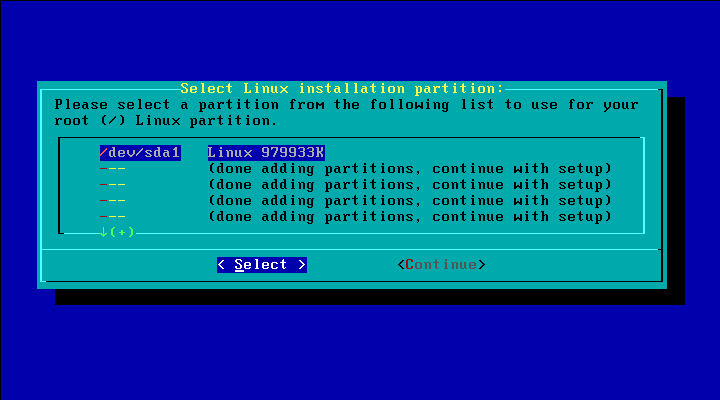
После выбора одного раздела, программа установки спросит, нужно ли форматировать раздел, и если вы ответите утвердительно, желаете ли вы проверить диск на битые секторы (Изображение 5.5). Проверка диска может занять продолжительное время.
Изображение 5.5. Форматирование раздела
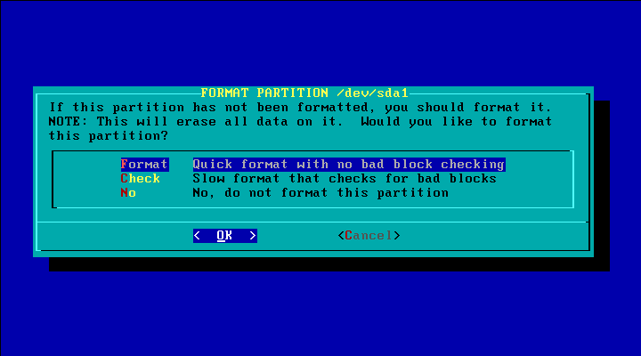
После выбора формата раздела, вы можете указать, какую файловую систему желаете использовать (Изображение 5.6). В общем случае вы можете выбрать ext2, ext3 и reiserfs. Ext2 много лет была стандартом файловых систем в Linux, но она не поддерживает журналирование. Журнал – это специальный файл или область раздела, в котором сохраняется информация об операциях файловой системы. В случае системного сбоя, будет возможно восстановить файловую систему, т.к. ядро может использовать журнал для анализа дисковых операций. ФС ext3 является той же файловой системой, что и ext2, но с поддержкой журналирования. Reiserfs также поддерживает журналирование. К тому же reiserfs использует деревья балансировки, которые ускоряют некоторые операции, особенно при работе со множеством файлов малого размера. Недостатком же является то, что это новая файловая система и поэтому может быть несколько менее стабильной.
Изображение 5.6. Выбор типа файловой системы
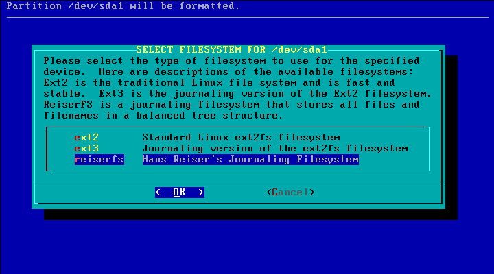
Первый добавленный раздел автоматически настраивается как корневой
(/). Для прочих разделов точка монтирования настраивается после
инициализации. Вы можете, например, создать отдельные разделы для
/, /var, /home и /usr.
Это придаст дополнительную устойчивость против сбоев. Если вы создадите
дополнительные разделы, вероятность того, что во время изменения данных на них
случится сбой системы, будет немного меньше. Также в целях безопасности лучше
выделить отдельный раздел под /home. Если программа уязвима для
атаки, пользователь может создать жёсткую ссылку на исполнимый файл этой
программы, если домашняя директория находится на том же разделе, что и
директории /{s}bin, /usr/{s}bin или
/usr/local/{s}bin. Этот пользователь всё ещё может получить доступ
к старой уязвимой версии программы даже после обновления ОС.
Следующий шаг – выбор носителя (Изображение 5.7). Этот диалог предполагает несколько вариантов, позволяющих установить Slackware Linux с CD-ROM или по NFS. После выбора пункта меню «CD-ROM», вам будет задан вопрос, использовать ли автоматическое определение устройства («Auto») или вы желаете сами указать устройство («Manual»). В последнем случае установщик выведет список устройств, среди которых нужно выбрать носитель Slackware Linux.
Изображение 5.7. Выбор носителя
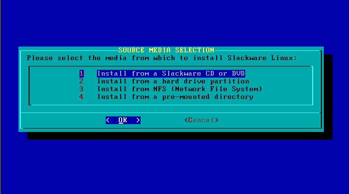
После выбора носителя, установщик спросит, какие наборы пакетов вы желаете установить. Каждый набор сопровождён кратким описанием.
Изображение 5.8. Выбор наборов пакетов
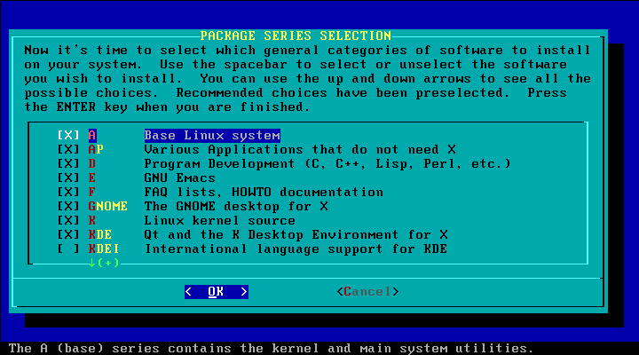
Сейчас самое время начать установку. Следующий экран спросит, какого типа установку вы хотите произвести. Наиболее очевидные варианты – полная установка («full»), установка с помощью меню («menu») или в экспертном режиме («expert»). В случае выбора опции «full» будут установлены все пакеты из выбранных дисковых наборов. Это простейший способ установки Slackware Linux. Недостатком такого режима установки является то, что будет занято чуть большее дисковое пространство. «Menu» будет выводить меню для каждого набора пакетов, в котором вы можете отметить пакеты для установки. Опция «expert» сравнима с вариантом, использующим меню, но позволяет вам отказаться от установки некоторых важных системных пакетов из набора «a».
После завершения установки программа предоставит вам возможность настроить некоторые подсистемы ОС. Первый диалог спросит, с какого носителя нужно установить ядро Linux (Изображение 5.9). В обычном случае ядро устанавливается с того же CD-ROM Slackware Linux, с которого устанавливается ОС. Вы можете подтвердить это или же выбрать другое ядро.
Изображение 5.9. Установка ядра
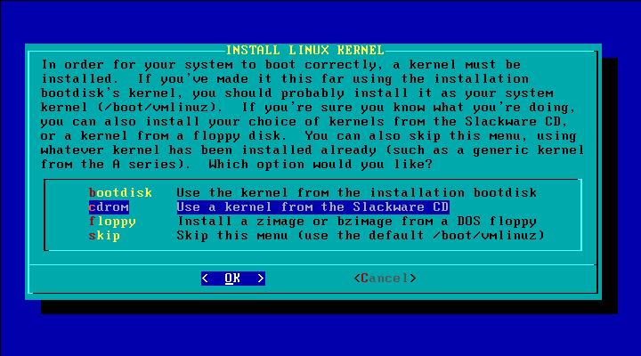
На этом этапе вы можете создать загрузочный диск (Изображение 5.10). Вы сможете использовать его, если LILO не станет загружаться.
Изображение 5.10. Создание загрузочного диска
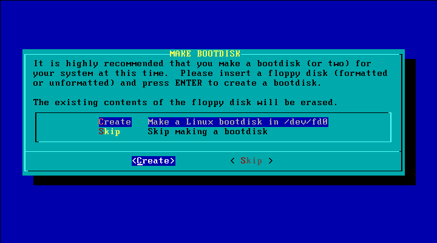
Следующий диалог может быть использован для создания ссылки
/dev/modem на устройство, которое вы используете
(Изображение 5.11). Если у вас нет модема, тогда выберите
соответствующий пункт меню.
Изображение 5.11. Выбор модема по умолчанию
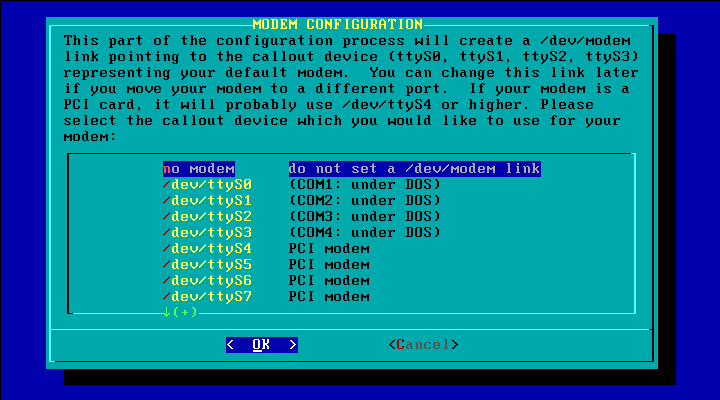
Следующий шаг – настройка горячего подключения устройств (Изображение 5.12). Горячее подключение используется для автоматической настройки устройств USB, PCMCIA и PCI. В общем случае нужно включить эту возможность, но на некоторых системах возникают проблемы при выполнении hotplug-сценариев.
Изображение 5.12. Горячее подключение устройств
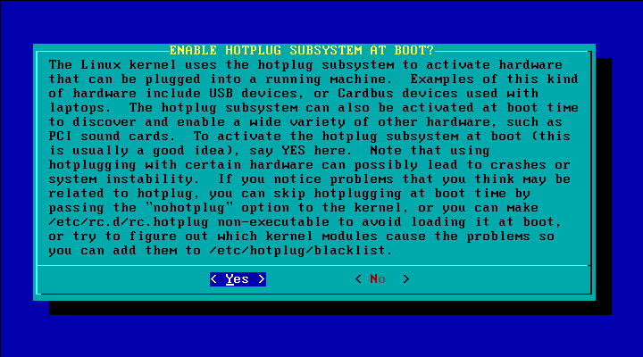
Следующие диалоги позволят вам установить LILO, загрузчик Linux. Если у вас недостаточно опыта в настройке LILO, тогда лучше выбрать опцию «simple», которая настроит загрузчик в автоматическом режиме (Изображение 5.13).
Изображение 5.13. Выбор типа установки LILO
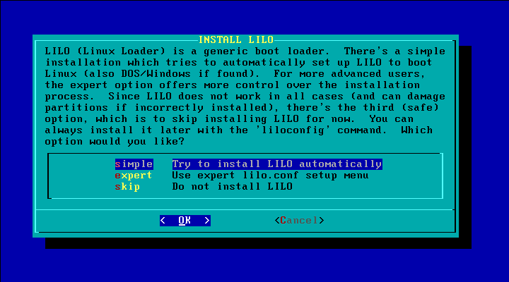
После выбора опции «Simple», программа настройки LILO спросит, желаете ли вы использовать фреймбуфер (Изображение 5.14). Включение фреймбуфера позволит вам использовать в консоли разрешения экрана, отличные от стандартных 80x25 символов. Некоторые люди, активно пользующиеся консолью, предпочитают использовать фреймбуфер, который позволяет выводить на экран больше текста. Если вам это не нужно или вы не уверены в его необходимости, вы можете выбрать вариант «standard».
Изображение 5.14. Выбор разрешения фреймбуфера
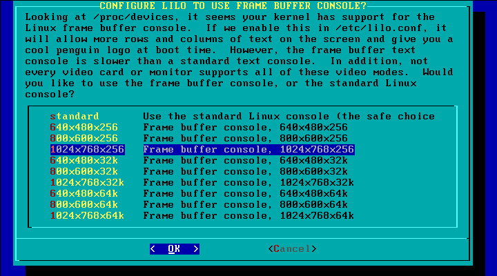
После настройки framebuffer, вы можете указать дополнительные параметры ядра (Изображение 5.15). Обычно этогого не требуется, поэтому если вы не желаете передавать ядру особые параметры, то можете пропустить шаг, нажав Enter.
Изображение 5.15. Добавление параметров ядра
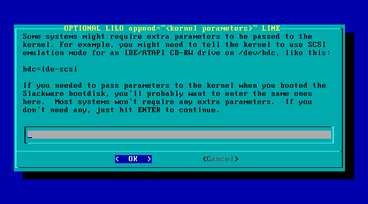
Последний этап настройки LILO – это выбор места установки
(Изображение 5.16). MBR – это главная
загрузочная запись (англ. Master boot record) компьютера. Используйте эту
опцию, если предполагаете использовать только одну операционную систему или
если загрузка других ОС будет осуществляться с помощью LILO. Опция
«Root» установит LILO в загрузочную запись корневой директории
/ Slackware Linux. Выберите эту опцию в случае использования
других загрузчиков.
Изображение 5.16. Выбор места установки LILO
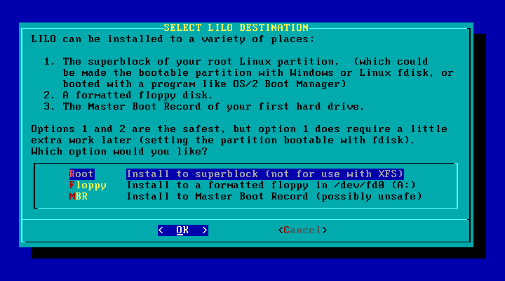
Далее нужно будет указать тип используемой вами мыши (Изображение 5.17)
Изображение 5.17. Настройка мыши
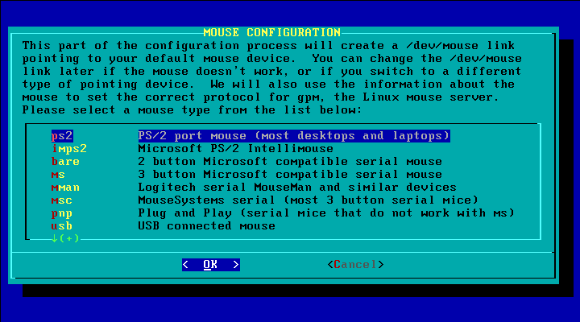
Программа установки поинтересуется, желаете ли вы использовать сервис gpm, который позволит вам использовать мышь в консоли (Изображение 5.18).
Изображение 5.18. Настройка GPM
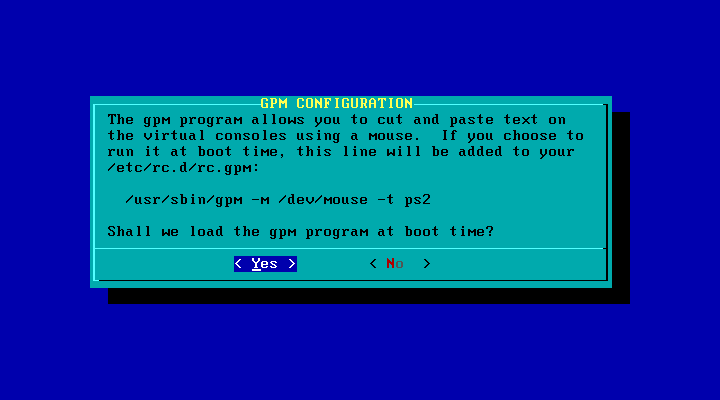
В течение следующих нескольких шагов будет настроено сетевое подключение. Это необходимо на большинстве сетевых систем. Но вы можете пропустить этап настройки сети, ответив «No» на вопрос арограммы установки Slackware Linux о настройке (Изображение 5.19).
Изображение 5.19. Настройка сети
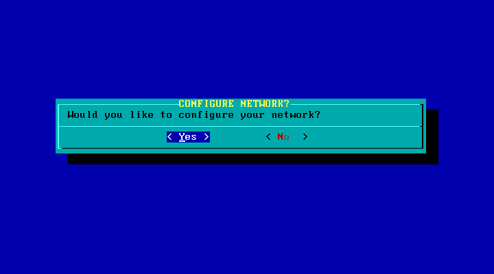
Сейчас вам нужно будет указать имя компьютера (Изображение 5.20). Учтите, что это не полное имя домена (FQDN, Fully qualified domain name), а его часть, представляющая имя узла сети (обычно это символы перед первой точкой и FQDN).
Изображение 5.20. Настройка имени компьютера
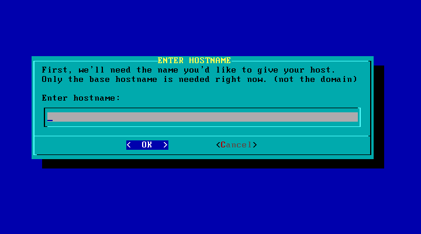
После настройки имени хоста, вы можете указать имя домена (Изображение 5.21).
Изображение 5.21. Настройка доменного имени
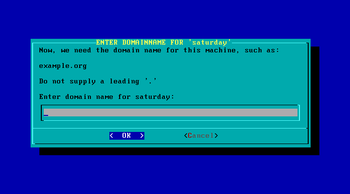
Оставшиеся шаги настройки сети зависят от типа используемого IP-адреса. Некоторые сети имеют отдельный DHCP-сервер, который автоматически назначает узлам IP-адреса. В этом случае на данном этапе установки нужно выбрать вариант «DHCP» (Изображение 5.22). Когда вы выберете эту опцию, вам будет нужно указать имя узла сети, которое будет передаваться DHCP-серверу. Обычно вы можете оставить пустое поле. Если вы используете настройку IP-адреса с помощью DHCP-сервера, то пропустите описанные ниже шаги настройки сети вручную.
Если в сети нет DHCP-сервера, вы можете выбрать опцию «static IP» и указать вручную статический IP-адрес.
Изображение 5.22. Настройка IP-адреса
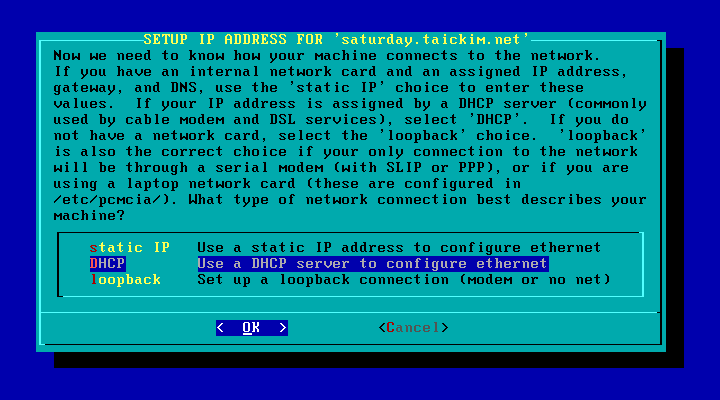
Первый шаг ручной настройки – указание IP-адреса первого интерфейса компьютера (eth0):
Изображение 5.23. Настройка IP-адреса
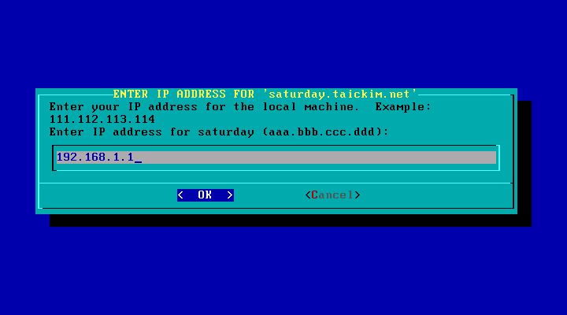
После настройки IP-адреса вы должны указать маску сети. Сетевая маска обычно зависит от класса используемого IP-адреса (Изображение 5.24).
Изображение 5.24. Настройка маски сети
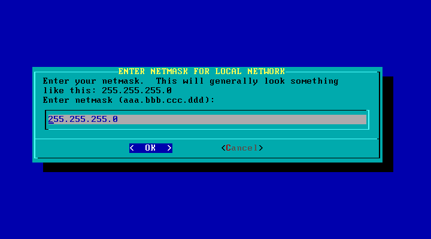
Далее требуется указать адрес шлюза (Изображение 5.25). Шлюз – это узел сети, который предоставляет доступ к другим сетям путём маршрутизации IP-пакетов. Если в вашей сети нет шлюза, пропустите шаг, нажав клавишу Enter.
Изображение 5.25. Настройка шлюза
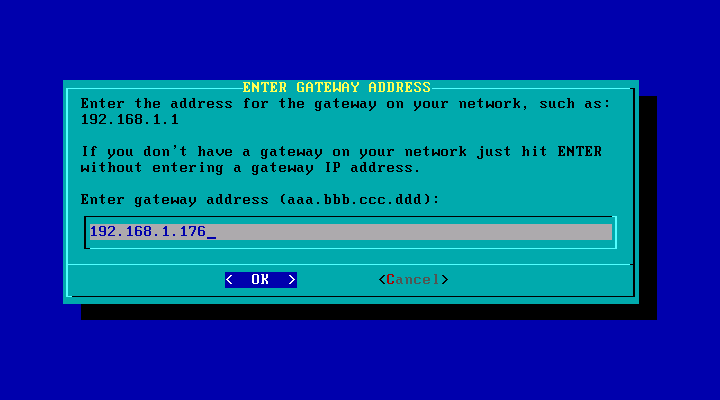
В следующем диалоге вас спросят, нужно ли настраивать сервер имён (Изображение 5.26). Сервер имён – это сервер, который разрешает доменные имена в соответствующие им адреса. Например, если вы переходите по адресу www.slackbasics.org, то сервер имён преобразует это имя в соответствующий IP-адрес.
Изображение 5.26. Настройка сервера имён
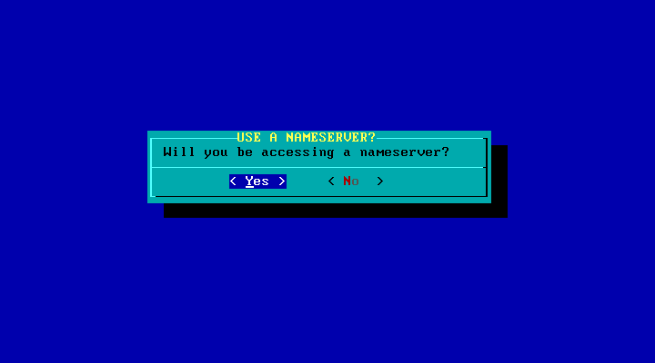
Если вы выберете настройку сервера имён, вам будет нужно указать его IP-адрес (Изображение 5.27).
Изображение 5.27. Настройка сервера имён (2)
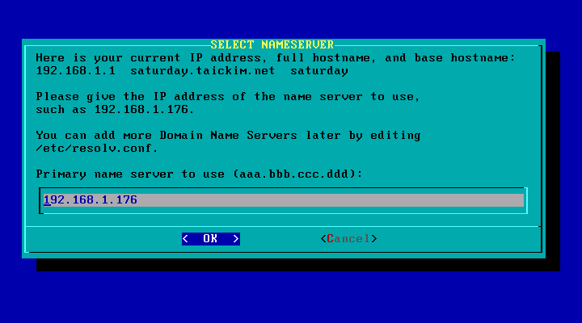
Последний экран представляет собой обзор всех указанных настроек сети. В случае ошибки в настройке, вы можете изменить параметры (Изображение 5.28).
Изображение 5.28. Утверждение сетевых настроек
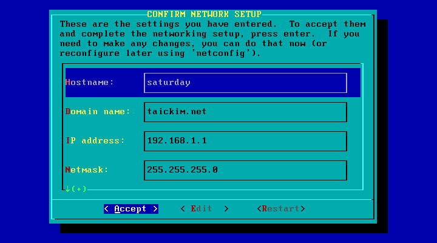
После настройки сети вы можете настроить сервисы, которые будут запускаться при каждой загрузке операционной системы (Изображение 5.29). Отмечаются сервисы клавишей Пробел.
Изображение 5.29. Включение/выключение загрузки сервисов
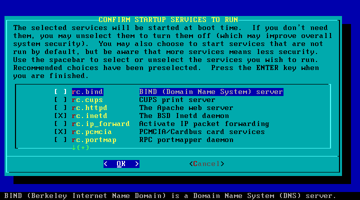
В UNIX-подобных системах время традиционно устанавливается в UTC. Если вам это подходит, на следующем шаге нажмите «Yes» (Изображение 5.30). Если вы используете другие операционные системы, например, Windows, тогда обычно лучше ответить «No», т.к. некоторые операционные системы не работают на ПК с различным значением системных и программных часов.
Изображение 5.30. Выбор формата времени
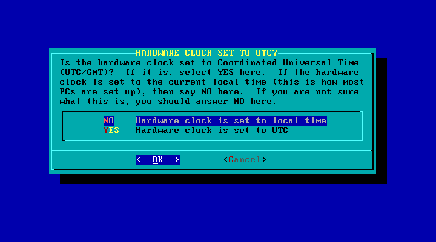
Далее вам нужно выбрать часовой пояс (Изображение 5.31). Это особенно важно на системах с часами, установленными в UTC, т.к. без корректных настроек часового пояса программные часы не будут показывать локальное время.
Изображение 5.31. Настройка часового пояса
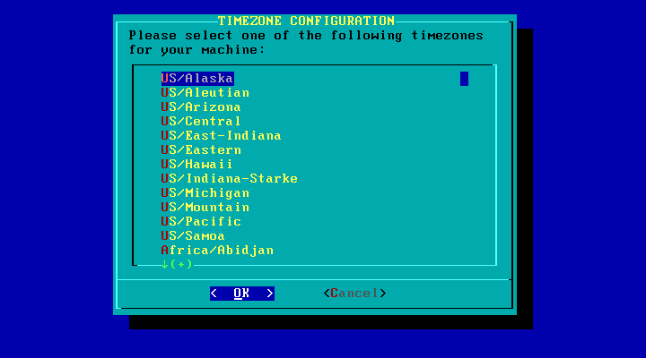
Если вы установили подсистему X-Windows, сейчас вы можете указать менеджер окон по умолчанию (Изображение 5.32). Большая часть менеджеров окон предоставляет сходный набор базовых функций, но некоторые менеджеры, такие как KDE, являются комплексными окружениями рабочего стола.
Изображение 5.32. Выбор менеджера окон
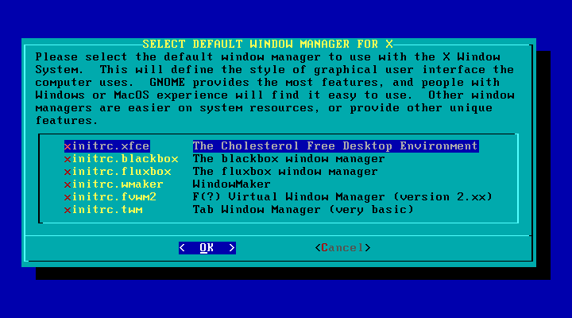
Последний шаг – установка пароля пользователя root (Изображение 5.33). Установщик спросит, желаете ли вы указать пароль. Нет причин не указывать его, т.к. учётная запись суперпользователя, не защищённая паролем, делает уязвимой всю систему.
Изображение 5.33. Добавление пароля суперпользователя
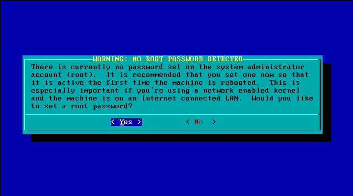
На этом этапе завершается установка Slackware Linux. Сейчас вы можете перезапустить компьютер для загрузки только что установленной ОС Slackware Linux.
Изображение 5.34. Завершение установки
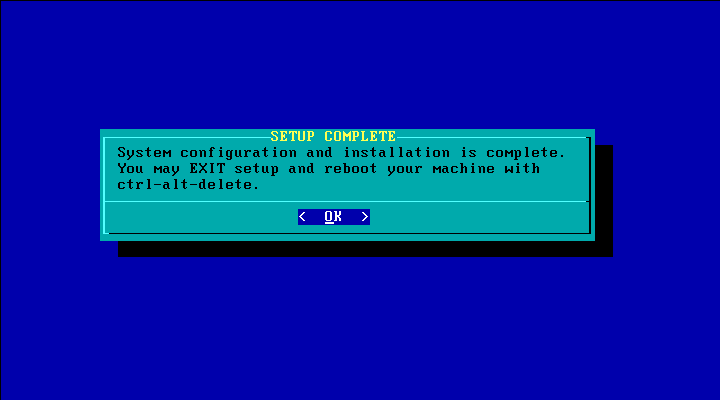
Это было не сложно, не правда ли? ;-)